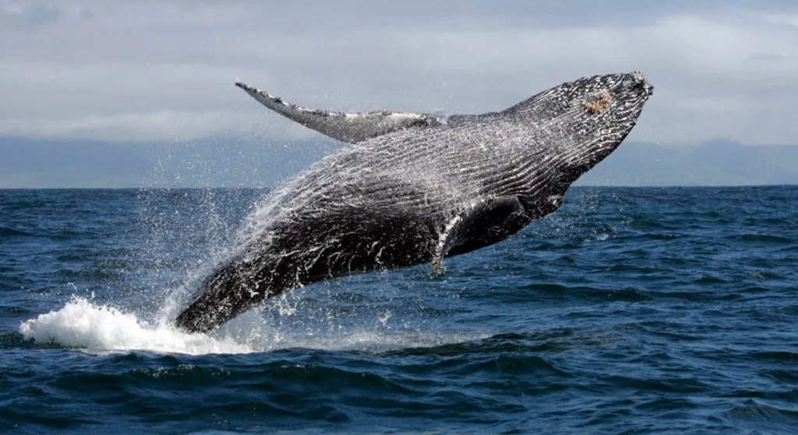
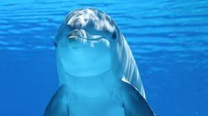
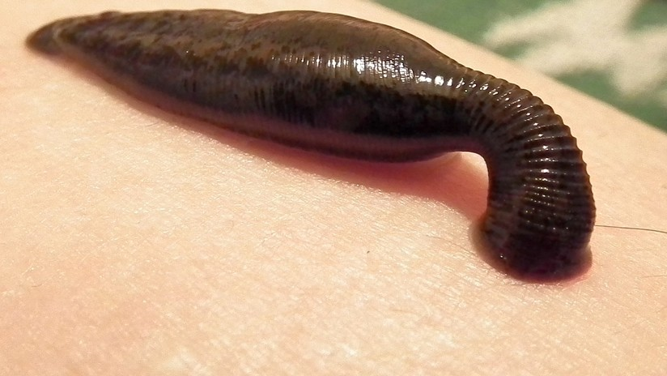
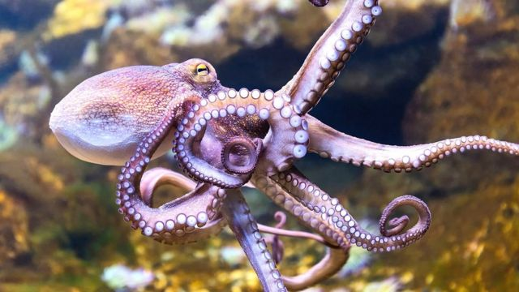
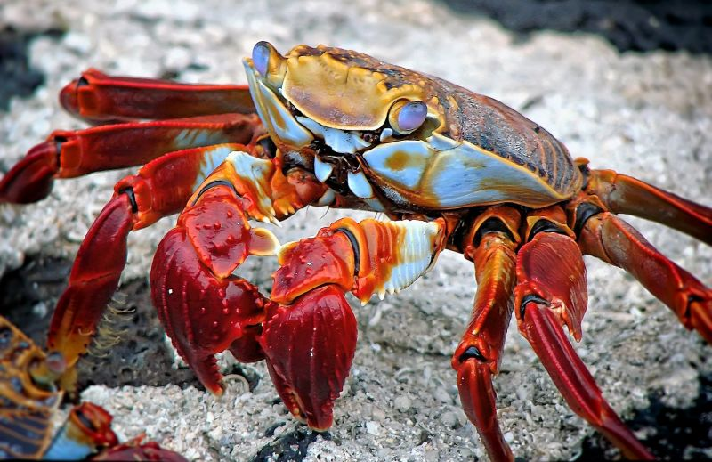
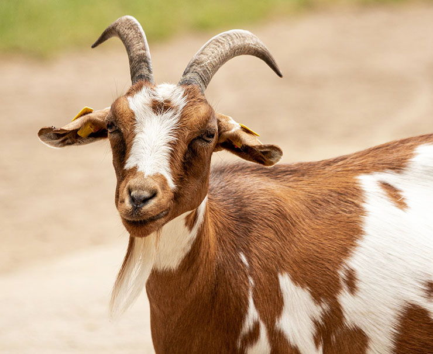
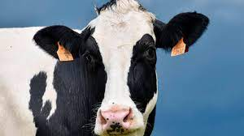
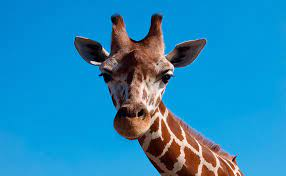
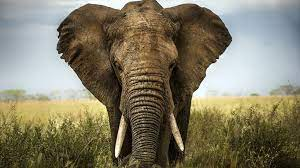
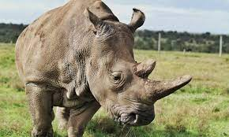

VERTEBRADOS
Son los que tienen un esqueleto articulado formado por huesos. Además, a diferencia de otros animales, el esqueleto es interno.
ContinuarINVERTEBRADOS
Los invertebrados carecen de columna vertebral y de esqueleto interno articulado. Son animales ovíparos, es decir, nacen de huevos.
ContinuarA qué familia de los invertebrados pertenece
A qué familia de los vertebrados pertenece
A que familia de los ANFIBIOS Pertenece
A que familia de los REPTILES Pertenece
A que familia de los Aves Pertenece
A que familia de los INSECTIVOROS Pertenece
Tu animal es un roedor, ¿Que tipo de roedor es?
A que familia de los Herbívoros Pertenece
A que tipo de pez pertenece el animal
¿Qué sonido hace el animal ?
El animal tiene TROMPA
¿Qué sonido hace el animal ?
A que familia de los OMNIVOROS Pertenece
A que familia de los carnivoros Pertenece
A que familia de los Canidos Pertenece
Selecciona a que grupo de Cetaceos Pertenece tu animal
.jpg)
Felicidades Elegiste la Ballena

Dentro de el orden de los cetáceos y concretamente del de los cetaceos misticetos se encuentran las ballenas, las cuales conforman la familia de los balaénidos o de las ballenas barbadas. Estas están clasificados en tan solo cuatro especies divididas en dos géneros, Balaena y Eubalaena. Estos animales pueden llegar a medir entre 25 y 32 metros y los ejemplares más grandes pueden llegar a pesar hasta 180 toneladas. De hecho, una de estas especies de balaenidos, la ballena azul, es el animal más grande del mundo en la actualidad.
Felicidades Elegiste el Delfin

Los delfines son un tipo de mamíferos cetáceos pertenecientes a la familia Delphinidae. Pueden vivir más de 30 años en cautividad y tienen una longitud de 3,5 metros aproximadamente. En la naturaleza, estos nadadores elegantes pueden alcanzar velocidades de más de 30 kilómetros por hora. Durante sus desplazamientos surgen a menudo a la superficie del mar para respirar, haciéndolo una media de dos o tres veces por minuto.
Felicidades Elegiste a la Sanguijuela

Una de las características más llamativas de las sanguijuelas es la cefalización y hace referencia a la distribución del sistema nervioso de estos gusanos. Y es que al igual que los humanos, estos anélidos cuentan con un cerebro, aunque no tan complejo como el nuestro. Además, las sanguijuelas poseen
órganos sensoriales que les permiten responder a estímulos del entorno.
Felicidades Elegiste al Escorpion
Los escorpiones pertenecen a la clase de los arácnidos, y están estrechamente emparentados con las arañas, los caros y las garrapatas. Se los asocia comúnmente con el desierto, pero también están presentes en la selva brasilea, Columbia Britnica, Carolina del Norte e incluso la cordillera del Himalaya. Estos resistentes y adaptables artrópodos existen desde hace cientos de millones de años, y son unos auténticos supervivientes.
Felicidades Elegiste al PULPO

Es un molusco, de la variedad de invertebrados que existen en el planeta, es decir, tienen cuerpo blando, a veces protegido por un caparazón como sucede en los
caracoles, pero todos los moluscos son acuáticos: calamares, pulpos y sepias
Felicidades Elegiste al CANGREJO

Los cangrejos son los crustáceos más populares de este planeta. Ya sea por su divertida
forma de caminar de lado o por sus curiosas pinzas con las que se defienden,
son uno de los animales que más simpatía despiertan.
Felicidades Elegiste al LOBO
Dentro de el orden de los cetáceos y concretamente del de los cetaceos misticetos se encuentran las ballenas, las cuales conforman la familia de los balaénidos o de las ballenas barbadas. Estas están clasificados en tan solo cuatro especies divididas en dos géneros, Balaena y Eubalaena. Estos animales pueden llegar a medir entre 25 y 32 metros y los ejemplares más grandes pueden llegar a pesar hasta 180 toneladas. De hecho, una de estas especies de balaenidos, la ballena azul, es el animal más grande del mundo en la actualidad.
Felicidades Elegiste al PERRO
Dentro de el orden de los cetáceos y concretamente del de los cetaceos misticetos se encuentran las ballenas, las cuales conforman la familia de los balaénidos o de las ballenas barbadas. Estas están clasificados en tan solo cuatro especies divididas en dos géneros, Balaena y Eubalaena. Estos animales pueden llegar a medir entre 25 y 32 metros y los ejemplares más grandes pueden llegar a pesar hasta 180 toneladas. De hecho, una de estas especies de balaenidos, la ballena azul, es el animal más grande del mundo en la actualidad.
Felicidades Elegiste al ZORRO
Dentro de el orden de los cetáceos y concretamente del de los cetaceos misticetos se encuentran las ballenas, las cuales conforman la familia de los balaénidos o de las ballenas barbadas. Estas están clasificados en tan solo cuatro especies divididas en dos géneros, Balaena y Eubalaena. Estos animales pueden llegar a medir entre 25 y 32 metros y los ejemplares más grandes pueden llegar a pesar hasta 180 toneladas. De hecho, una de estas especies de balaenidos, la ballena azul, es el animal más grande del mundo en la actualidad.
Felicidades Elegiste al TIGRE
Dentro de el orden de los cetáceos y concretamente del de los cetaceos misticetos se encuentran las ballenas, las cuales conforman la familia de los balaénidos o de las ballenas barbadas. Estas están clasificados en tan solo cuatro especies divididas en dos géneros, Balaena y Eubalaena. Estos animales pueden llegar a medir entre 25 y 32 metros y los ejemplares más grandes pueden llegar a pesar hasta 180 toneladas. De hecho, una de estas especies de balaenidos, la ballena azul, es el animal más grande del mundo en la actualidad.
Felicidades Elegiste al LEON
Dentro de el orden de los cetáceos y concretamente del de los cetaceos misticetos se encuentran las ballenas, las cuales conforman la familia de los balaénidos o de las ballenas barbadas. Estas están clasificados en tan solo cuatro especies divididas en dos géneros, Balaena y Eubalaena. Estos animales pueden llegar a medir entre 25 y 32 metros y los ejemplares más grandes pueden llegar a pesar hasta 180 toneladas. De hecho, una de estas especies de balaenidos, la ballena azul, es el animal más grande del mundo en la actualidad.
Felicidades Elegiste al GATO
Dentro de el orden de los cetáceos y concretamente del de los cetaceos misticetos se encuentran las ballenas, las cuales conforman la familia de los balaénidos o de las ballenas barbadas. Estas están clasificados en tan solo cuatro especies divididas en dos géneros, Balaena y Eubalaena. Estos animales pueden llegar a medir entre 25 y 32 metros y los ejemplares más grandes pueden llegar a pesar hasta 180 toneladas. De hecho, una de estas especies de balaenidos, la ballena azul, es el animal más grande del mundo en la actualidad.
Felicidades Elegiste al LEOPARDO
Dentro de el orden de los cetáceos y concretamente del de los cetaceos misticetos se encuentran las ballenas, las cuales conforman la familia de los balaénidos o de las ballenas barbadas. Estas están clasificados en tan solo cuatro especies divididas en dos géneros, Balaena y Eubalaena. Estos animales pueden llegar a medir entre 25 y 32 metros y los ejemplares más grandes pueden llegar a pesar hasta 180 toneladas. De hecho, una de estas especies de balaenidos, la ballena azul, es el animal más grande del mundo en la actualidad.
Felicidades Elegiste al PANTERA
Dentro de el orden de los cetáceos y concretamente del de los cetaceos misticetos se encuentran las ballenas, las cuales conforman la familia de los balaénidos o de las ballenas barbadas. Estas están clasificados en tan solo cuatro especies divididas en dos géneros, Balaena y Eubalaena. Estos animales pueden llegar a medir entre 25 y 32 metros y los ejemplares más grandes pueden llegar a pesar hasta 180 toneladas. De hecho, una de estas especies de balaenidos, la ballena azul, es el animal más grande del mundo en la actualidad.
Felicidades Elegiste al ORNITORRINCO
Dentro de el orden de los cetáceos y concretamente del de los cetaceos misticetos se encuentran las ballenas, las cuales conforman la familia de los balaénidos o de las ballenas barbadas. Estas están clasificados en tan solo cuatro especies divididas en dos géneros, Balaena y Eubalaena. Estos animales pueden llegar a medir entre 25 y 32 metros y los ejemplares más grandes pueden llegar a pesar hasta 180 toneladas. De hecho, una de estas especies de balaenidos, la ballena azul, es el animal más grande del mundo en la actualidad.
Felicidades Elegiste al TOPO
Dentro de el orden de los cetáceos y concretamente del de los cetaceos misticetos se encuentran las ballenas, las cuales conforman la familia de los balaénidos o de las ballenas barbadas. Estas están clasificados en tan solo cuatro especies divididas en dos géneros, Balaena y Eubalaena. Estos animales pueden llegar a medir entre 25 y 32 metros y los ejemplares más grandes pueden llegar a pesar hasta 180 toneladas. De hecho, una de estas especies de balaenidos, la ballena azul, es el animal más grande del mundo en la actualidad.
Felicidades Elegiste al PINGUINO
Dentro de el orden de los cetáceos y concretamente del de los cetaceos misticetos se encuentran las ballenas, las cuales conforman la familia de los balaénidos o de las ballenas barbadas. Estas están clasificados en tan solo cuatro especies divididas en dos géneros, Balaena y Eubalaena. Estos animales pueden llegar a medir entre 25 y 32 metros y los ejemplares más grandes pueden llegar a pesar hasta 180 toneladas. De hecho, una de estas especies de balaenidos, la ballena azul, es el animal más grande del mundo en la actualidad.
Felicidades Elegiste al AGUILA
Dentro de el orden de los cetáceos y concretamente del de los cetaceos misticetos se encuentran las ballenas, las cuales conforman la familia de los balaénidos o de las ballenas barbadas. Estas están clasificados en tan solo cuatro especies divididas en dos géneros, Balaena y Eubalaena. Estos animales pueden llegar a medir entre 25 y 32 metros y los ejemplares más grandes pueden llegar a pesar hasta 180 toneladas. De hecho, una de estas especies de balaenidos, la ballena azul, es el animal más grande del mundo en la actualidad.
Felicidades Elegiste al PALOMA
Dentro de el orden de los cetáceos y concretamente del de los cetaceos misticetos se encuentran las ballenas, las cuales conforman la familia de los balaénidos o de las ballenas barbadas. Estas están clasificados en tan solo cuatro especies divididas en dos géneros, Balaena y Eubalaena. Estos animales pueden llegar a medir entre 25 y 32 metros y los ejemplares más grandes pueden llegar a pesar hasta 180 toneladas. De hecho, una de estas especies de balaenidos, la ballena azul, es el animal más grande del mundo en la actualidad.
Felicidades Elegiste al GALLO
Dentro de el orden de los cetáceos y concretamente del de los cetaceos misticetos se encuentran las ballenas, las cuales conforman la familia de los balaénidos o de las ballenas barbadas. Estas están clasificados en tan solo cuatro especies divididas en dos géneros, Balaena y Eubalaena. Estos animales pueden llegar a medir entre 25 y 32 metros y los ejemplares más grandes pueden llegar a pesar hasta 180 toneladas. De hecho, una de estas especies de balaenidos, la ballena azul, es el animal más grande del mundo en la actualidad.
Felicidades Elegiste al CABALLO
.jpeg)
El caballo es un mamífero perisodáctilo domesticado de la familia de los équidos. Es un herbívoro perisodáctilo de gran porte, y cuello largo y arqueado poblado por largas crines. La mayoría de los animales que pastan
tienen la pata hendida, es decir, sus patas terminan en dos dedos con casco.
Felicidades Elegiste la CEBRA
.jpeg)
Las cebras le deben a sus rayas la mayor parte de su fama. Son animales robustos, de forma similar a la del caballo. Es por ello que a través de los años se le ha intentado domesticar, pero la naturaleza de las cebras
es distinta a la de los caballos y la domesticación ha sido prácticamente imposible.
Felicidades Elegiste al CABRA

La cabra es un mamífero artiodáctilo de la subfamilia Caprinae que fue
domesticado alrededor del octavo milenio a. C., sobre todo por su carne y leche. Al macho de la cabra se le llama cabrón, así como también cabro, chivato, macho cabrío,
irasco o chivo, y a las crías se las llama cabrito, chivo, chivito o baifo.
Felicidades Elegiste al VACA

La vaca, en el caso de la hembra, o toro, en el caso del macho, es un mamífero artiodáctilo de la familia de los bóvidos. Anteriormente era considerado una subespecie de Bos primigenius,
pero un estudio reciente lo considera una especie distinta.
Felicidades Elegiste al JIRAFA

La jirafa es una especie de mamífero artiodáctilo, de la familia Giraffidae propio de África. Es la más alta de todas las especies de animales terrestres existentes,
ya que puede alcanzar una altura de 5,8 m y un peso que varía entre 750 y 1600 kg.
Felicidades Elegiste al ELEFANTE

Los elefantes o elefántidos son una familia de mamíferos
placentarios del orden Proboscidea. Antiguamente se clasificaban,
junto con otros mamíferos de piel gruesa, en el orden, ahora
inválido, de los paquidermos. Existen hoy en día tres especies
y diversas subespecies.
Felicidades Elegiste al CONEJO
Dentro de el orden de los cetáceos y concretamente del de los cetaceos misticetos se encuentran las ballenas, las cuales conforman la familia de los balaénidos o de las ballenas barbadas. Estas están clasificados en tan solo cuatro especies divididas en dos géneros, Balaena y Eubalaena. Estos animales pueden llegar a medir entre 25 y 32 metros y los ejemplares más grandes pueden llegar a pesar hasta 180 toneladas. De hecho, una de estas especies de balaenidos, la ballena azul, es el animal más grande del mundo en la actualidad.
Felicidades Elegiste al CANGURO
Dentro de el orden de los cetáceos y concretamente del de los cetaceos misticetos se encuentran las ballenas, las cuales conforman la familia de los balaénidos o de las ballenas barbadas. Estas están clasificados en tan solo cuatro especies divididas en dos géneros, Balaena y Eubalaena. Estos animales pueden llegar a medir entre 25 y 32 metros y los ejemplares más grandes pueden llegar a pesar hasta 180 toneladas. De hecho, una de estas especies de balaenidos, la ballena azul, es el animal más grande del mundo en la actualidad.
Felicidades Elegiste al RINOCERONTE

Los rinocerontes alguna vez habitaron libremente muchos lugares en Eurasia y África, y eran conocidos por los primeros europeos quienes los representaban en pinturas rupestres. A principios del siglo XX, se estima que había alrededor de 500,000 rinocerontes en África y Asia. En 1970, la población disminuyó
a 70,000 pero actualmente solo quedan unos 27,000 rinocerontes en la naturaleza.
Felicidades Elegiste al TIBURON
Dentro de el orden de los cetáceos y concretamente del de los cetaceos misticetos se encuentran las ballenas, las cuales conforman la familia de los balaénidos o de las ballenas barbadas. Estas están clasificados en tan solo cuatro especies divididas en dos géneros, Balaena y Eubalaena. Estos animales pueden llegar a medir entre 25 y 32 metros y los ejemplares más grandes pueden llegar a pesar hasta 180 toneladas. De hecho, una de estas especies de balaenidos, la ballena azul, es el animal más grande del mundo en la actualidad.
Felicidades Elegiste al PEZ VOLADOR
Dentro de el orden de los cetáceos y concretamente del de los cetaceos misticetos se encuentran las ballenas, las cuales conforman la familia de los balaénidos o de las ballenas barbadas. Estas están clasificados en tan solo cuatro especies divididas en dos géneros, Balaena y Eubalaena. Estos animales pueden llegar a medir entre 25 y 32 metros y los ejemplares más grandes pueden llegar a pesar hasta 180 toneladas. De hecho, una de estas especies de balaenidos, la ballena azul, es el animal más grande del mundo en la actualidad.
Felicidades Elegiste al ARDILLA
Dentro de el orden de los cetáceos y concretamente del de los cetaceos misticetos se encuentran las ballenas, las cuales conforman la familia de los balaénidos o de las ballenas barbadas. Estas están clasificados en tan solo cuatro especies divididas en dos géneros, Balaena y Eubalaena. Estos animales pueden llegar a medir entre 25 y 32 metros y los ejemplares más grandes pueden llegar a pesar hasta 180 toneladas. De hecho, una de estas especies de balaenidos, la ballena azul, es el animal más grande del mundo en la actualidad.
Felicidades Elegiste al IGUANA
Dentro de el orden de los cetáceos y concretamente del de los cetaceos misticetos se encuentran las ballenas, las cuales conforman la familia de los balaénidos o de las ballenas barbadas. Estas están clasificados en tan solo cuatro especies divididas en dos géneros, Balaena y Eubalaena. Estos animales pueden llegar a medir entre 25 y 32 metros y los ejemplares más grandes pueden llegar a pesar hasta 180 toneladas. De hecho, una de estas especies de balaenidos, la ballena azul, es el animal más grande del mundo en la actualidad.
Felicidades Elegiste al RATA
Dentro de el orden de los cetáceos y concretamente del de los cetaceos misticetos se encuentran las ballenas, las cuales conforman la familia de los balaénidos o de las ballenas barbadas. Estas están clasificados en tan solo cuatro especies divididas en dos géneros, Balaena y Eubalaena. Estos animales pueden llegar a medir entre 25 y 32 metros y los ejemplares más grandes pueden llegar a pesar hasta 180 toneladas. De hecho, una de estas especies de balaenidos, la ballena azul, es el animal más grande del mundo en la actualidad.
Felicidades Elegiste al SAPO
Dentro de el orden de los cetáceos y concretamente del de los cetaceos misticetos se encuentran las ballenas, las cuales conforman la familia de los balaénidos o de las ballenas barbadas. Estas están clasificados en tan solo cuatro especies divididas en dos géneros, Balaena y Eubalaena. Estos animales pueden llegar a medir entre 25 y 32 metros y los ejemplares más grandes pueden llegar a pesar hasta 180 toneladas. De hecho, una de estas especies de balaenidos, la ballena azul, es el animal más grande del mundo en la actualidad.
Felicidades Elegiste al HAMSTER
Dentro de el orden de los cetáceos y concretamente del de los cetaceos misticetos se encuentran las ballenas, las cuales conforman la familia de los balaénidos o de las ballenas barbadas. Estas están clasificados en tan solo cuatro especies divididas en dos géneros, Balaena y Eubalaena. Estos animales pueden llegar a medir entre 25 y 32 metros y los ejemplares más grandes pueden llegar a pesar hasta 180 toneladas. De hecho, una de estas especies de balaenidos, la ballena azul, es el animal más grande del mundo en la actualidad.
Felicidades Elegiste al COCODRILO
Dentro de el orden de los cetáceos y concretamente del de los cetaceos misticetos se encuentran las ballenas, las cuales conforman la familia de los balaénidos o de las ballenas barbadas. Estas están clasificados en tan solo cuatro especies divididas en dos géneros, Balaena y Eubalaena. Estos animales pueden llegar a medir entre 25 y 32 metros y los ejemplares más grandes pueden llegar a pesar hasta 180 toneladas. De hecho, una de estas especies de balaenidos, la ballena azul, es el animal más grande del mundo en la actualidad.
Felicidades Elegiste al HALCON
Dentro de el orden de los cetáceos y concretamente del de los cetaceos misticetos se encuentran las ballenas, las cuales conforman la familia de los balaénidos o de las ballenas barbadas. Estas están clasificados en tan solo cuatro especies divididas en dos géneros, Balaena y Eubalaena. Estos animales pueden llegar a medir entre 25 y 32 metros y los ejemplares más grandes pueden llegar a pesar hasta 180 toneladas. De hecho, una de estas especies de balaenidos, la ballena azul, es el animal más grande del mundo en la actualidad.
Felicidades Elegiste al COLIBRI
Dentro de el orden de los cetáceos y concretamente del de los cetaceos misticetos se encuentran las ballenas, las cuales conforman la familia de los balaénidos o de las ballenas barbadas. Estas están clasificados en tan solo cuatro especies divididas en dos géneros, Balaena y Eubalaena. Estos animales pueden llegar a medir entre 25 y 32 metros y los ejemplares más grandes pueden llegar a pesar hasta 180 toneladas. De hecho, una de estas especies de balaenidos, la ballena azul, es el animal más grande del mundo en la actualidad.
Felicidades Elegiste al TORTUGA
Dentro de el orden de los cetáceos y concretamente del de los cetaceos misticetos se encuentran las ballenas, las cuales conforman la familia de los balaénidos o de las ballenas barbadas. Estas están clasificados en tan solo cuatro especies divididas en dos géneros, Balaena y Eubalaena. Estos animales pueden llegar a medir entre 25 y 32 metros y los ejemplares más grandes pueden llegar a pesar hasta 180 toneladas. De hecho, una de estas especies de balaenidos, la ballena azul, es el animal más grande del mundo en la actualidad.